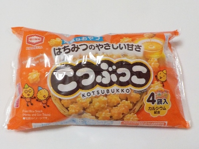
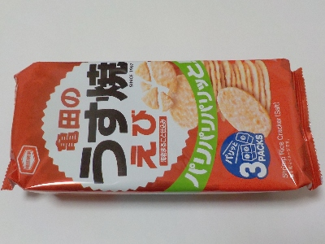
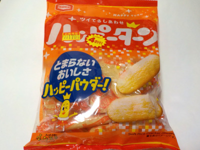
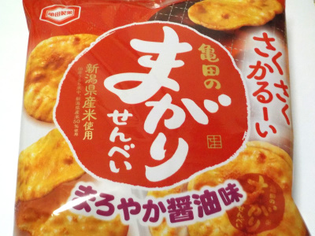
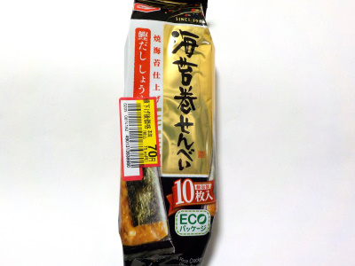
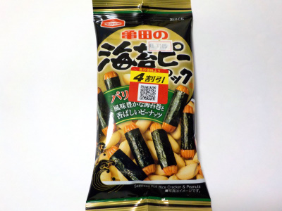

亀田製菓のこつぶっこは甘くて辛くて油があって満足です。
更新日 : 2026/01/11
新潟県新潟市江南区亀田工業団地3丁目1番1号
更新日 : 2026/01/11

こつぶっこは甘いですね。パッケージも子供向けな感じで、お酒のおつまみ的な感じはあまりありませんでした。
甘いっていってもパッケージに書いてある「はちみつのやさいしい甘さ」ってことで、ほどほどでした。子供のおやつにぴったりですね。
更新日 : 2024/11/22

パッケージが派手になって値段が上がりました。物価が上がっているので当然です。
エビの風味が強いし塩分もあって美味しいです。でもなんとなく昔の方が美味しかった気がするのは何故なんだろう？
パッケージが立派になったので、商品自体も変わってしまった気分になりました。
更新日 : 2023/09/16

4割引きです。喜んで買いました。
パッケージに書いてあったんですが、幸せが戻って来るで「ハッピーターン HARRY TURN」だそうです。
いい名前ですね。
更新日 : 2023/02/28

パッケージにも書いてありますが、さくさくかるーい食感とまろやか醤油のやさしい味わいでした。
期待通りで想像通りの商品でした。亀田のお菓子は安心して食べれるものが多いです。
更新日 : 2023/02/15

個包装のお煎餅が袋の中にぎっしり入っていました。
かさばらなくてとってもいいです。せんべいの大きさは手に取り易く、食べやすいサイズ。サイズ感がとってもいいって思いました。
菓子鉢に入れて出すのに良さそう。
更新日 : 2023/02/01

お酒のおつまみで海苔ピーパックを食べました。
美味しいんですが、酔っ払っているせいか塩分がもっと欲しいって思いました。
塩分欲しい系の人は柿の種とかスナックとかの方がいいかもしれないです。
健康的にはこれくらいの塩分がいいんでしょうね。